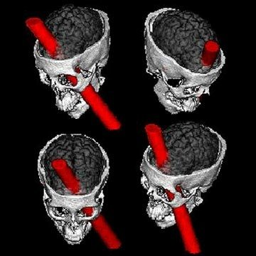

An original quote that has often been misinterpreted is:
"We are making use of only a small part of our possible mental and physical resources" (William James, 1908)
It has nothing to do with saying that we are using only 10% of our brain. Here are a few arguments why this is actually very much unlikely:
Removing (even small) parts of the brain can have substantial effects on behaviours. Ex: Phineas P. Gage, he survived a destruction of much of his brain's left frontal lobe => known consequences: Profound effects on his personality and behaviour.

fMRI, EEG, MEG, PET scans: the whole brain show temporal fluctuation in terms of hemodynamic response, electrical activity, magnetic field and chemical activity (even during rest and sleep). Some regions increase their activity for a given task and period but it does not mean that other parts are turned off, it only means that they are less activated.
The brain, 2% of the body weight, accounts for about 20% of the oxygen and calories consumed by the body (Clark and Sokoloff, 1999). From an evolutionary perspective, a brain that is 90% useless and that expensive in terms energy intake is unlikely to develop.
Neuroplasticity: Training and learning induce structural and functional changes in the brain (Draganski et al, 2004). On the other hand: not enough input and the synapses are eliminated (Hubel and Wiesel, 1964). Therefore, it is very likely that the 90% useless would degenerate.
The brain is made of cells (mostly neurons and glial cells): Some are useful for the structure of the brain, some for the immunity, some for cleaning up, some for chemical extracellular space regulation, some for "feeding" neurons, some for transmitting information, etc... Again, it is very unlikely that there is space for 90% of uselessness.
Given these arguments, I would say that it is very, very likely that we used 100% of our brain.
However, you can improve both your physical (strength, flexibility, accuracy, cardiovascular, etc...) and mental (attention, memory, motivation, self-esteem, etc...) skills. The brain plasticity is not a myth:
Training and learning induce structural and functional changes in the brain (Draganski et al, 2004).
Studies on conditioning, cognitivo-behavioral therapies, learning, sport psychology, etc... are proofs that your behaviors, mood, cognitive skills, etc... are partly controllable thus improvable.
Therefore, I bet that you are using 100% of your brain though you might not exploit 100% of your abilities… :)
Sources:
http://www.cuyamaca.edu/people/jr-jones/intro-psych/10_Percent_Myth_Articles.pdf
Clarke, DD & Sokoloff, L 1999, 'Regulation of cerebral metabolic rate'.
Draganski, B, Gaser, C, Busch, V, Schuierer, G, Bogdahn, U & May, A 2004, 'Neuroplasticity: changes in grey matter induced by training', Nature, vol. 427, no. 6972, pp. 311-312.
Purves, D & Lichtman, JW 1980, 'Elimination of synapses in the developing nervous system', Science, vol. 210, no. 4466, pp. 153-157.
Wiesel, TN & Hubel, DH 1965, 'Comparison of the effects of unilateral and bilateral eye closure on cortical unit responses in kittens', J neurophysiol, vol. 28, no. 6, pp. 1029-1040.